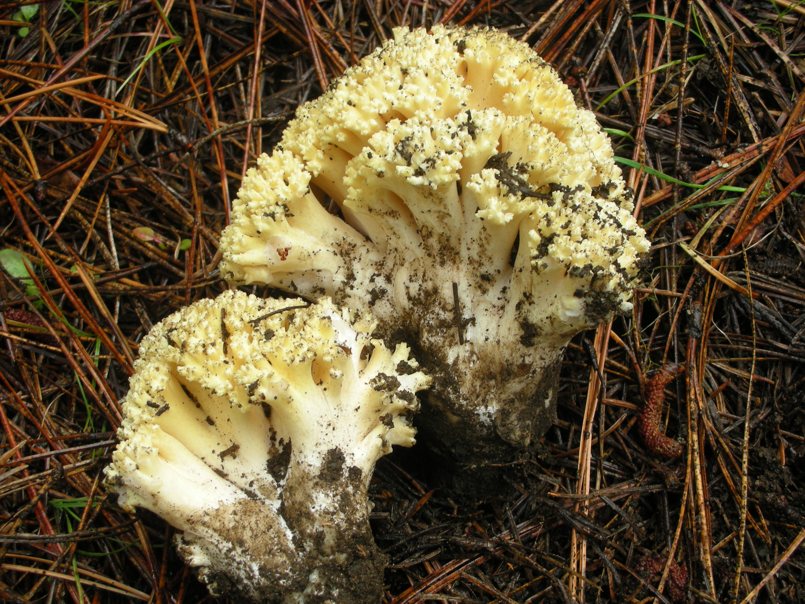
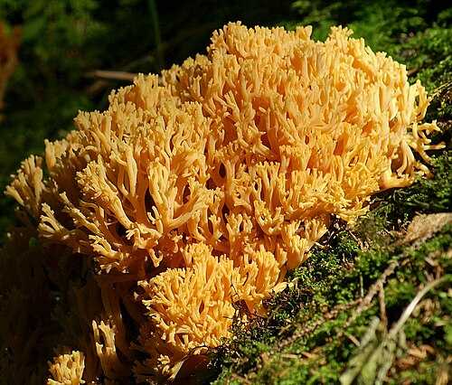
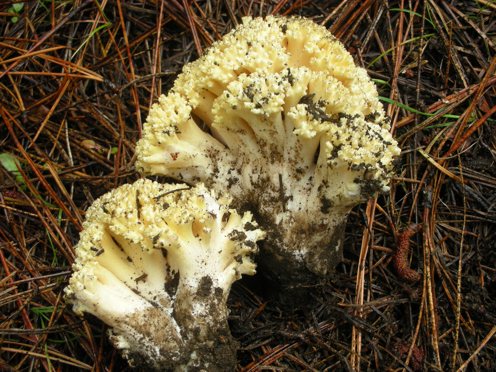
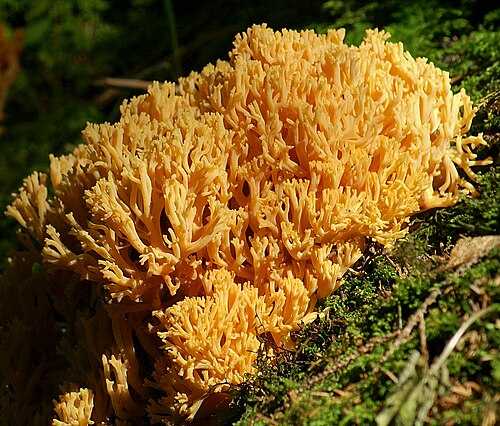

What is Ramaria?
Ramaria is a large genus of coral fungi in the family Gomphaceae. Instead of having a classic cap and stem, these mushrooms grow as branching structures that look like tiny pieces of underwater coral. Scientists estimate that there are around two hundred species in the genus, showing colors that range from pale cream and bright yellow to orange, pink, tan, and even purple.
Many species form dense clusters on the forest floor. Some are edible, such as the yellow species Ramaria flava and Ramaria aurea, while others are mildly poisonous and can cause stomach upset. The mix of edible, inedible, and toxic species is one reason why coral fungi are beautiful to look at but tricky to identify confidently.
Habitat & Forest Partnerships
Most Ramaria species live in temperate forests around the world. They are mycorrhizal fungi, which means they form a partnership with tree roots. The fungus helps trees absorb water and nutrients from the soil, and in return the trees share sugars made through photosynthesis. These partnerships can happen with both broadleaf trees like beech and oak and with conifers such as fir and hemlock.
Coral fungi often appear on the ground in leaf litter, sometimes in small clusters and sometimes scattered across the forest floor. Some species are known as “snowbank fungi,” because they fruit along the edges of melting snow in spring. Others grow from buried pieces of wood or along old, hidden logs, forming lines of mushrooms that trace where the wood is breaking down.
Ramaria as a Natural Dye
Artists and dyers are especially interested in Ramaria because certain species can be used to make soft, earthy colors on wool, silk, and linen. The Mushroom Color Atlas shows how fresh coral fungi can produce gentle greys and buttery yellows when combined with different metal mordants such as iron, alum, or tin.
These mushrooms are quite sensitive in the dye pot. They only give good color when they are very fresh, and the temperature has to stay on the lower side so that the colors do not dull or turn flat grey. Dyed samples from the atlas reveal a surprising range: iron can deepen the shade toward smoky grey, while alum and other mordants can shift the yellows slightly warmer or cooler. Even though the palette is subtle, coral fungi add a beautiful, natural feel to fabric and watercolor pigments.
Safety, Edibility & Look-alikes
Because many coral fungi look similar, mushroom experts warn that Ramaria species should be treated with caution. Some, like Ramaria botrytis, are eaten in certain regions, but others, such as Ramaria formosa, are reported as poisonous and can cause nausea, vomiting, diarrhea, and stomach pain. Even species described as “edible” may cause reactions in sensitive people.
For this reason, this page is for learning and dye inspiration only, not for foraging advice. If you are interested in collecting coral fungi, it is important to work with local mycological societies, follow regional field guides, and avoid tasting any wild mushroom unless an experienced expert has identified it.
Photo Gallery: Coral Fungi in the Genus Ramaria

 


